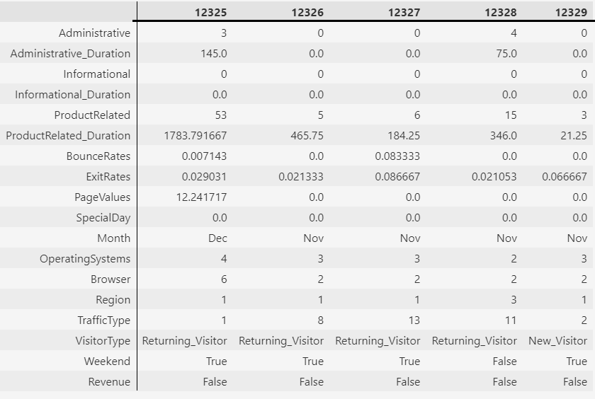
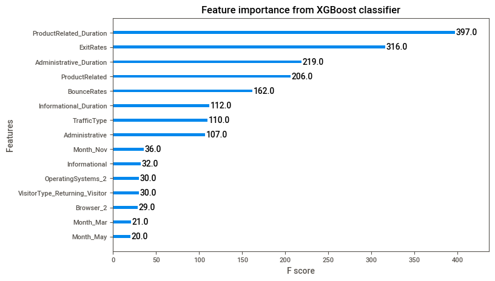

Project information
- Category: Sales, Retail, e-Commerce
- Tags: Classification, Ensemble methods, Boosting
- Link to dataset : Proprietary Data
Context
Ecommerce data contains information relating to the visitors and performance of an online shop. It's mostly used by marketers in understanding consumer behavior and enhancing conversion funnels. The objective of this project is to find out the features which have the most information context to differentiate the positive class and negative class and build a model to predict whether a customer will buy a product or not.
Data I used:
This is a properietary dataset and is not available publically. The data contains information on web sessions of an online merchant.

The first 6 features
- "Administrative", "Administrative Duration", "Informational", "Informational Duration", "Product Related" and "Product Related Duration": These represent the number of different types of pages visited by the visitor in that session and total time spent in each of these page categories. The values of these features are derived from the URL information of the pages visited by the user and updated in real-time when a user takes an action, e.g. moving from one page to another.
The next 3 features
- "Bounce Rate", "Exit Rate" and "Page Value": These features represent the metrics measured by "Google Analytics" for each page in the e-commerce site.
- Bounce Rate for a web page refers to the percentage of visitors who enter the site from that page and then leave ("bounce") without triggering any other requests to the analytics server during that session.
- Exit Rate for a specific web page is calculated as for all pageviews to the page, the percentage that was the last in the session.
The dataset has average bounce rates and exit rates for a page customer landed on.
Other features
- Special Day: The "Special Day" feature indicates the closeness of the site visiting time to a specific special day (e.g. Mother's Day, Valentine's Day) in which the sessions are more likely to be finalized with the transaction. The value of this attribute is determined by considering the dynamics of e-commerce such as the duration between the order date and delivery date. For example, for Valentine's day, this value takes a nonzero value between February 2 and February 12, zero before and after this date unless it is close to another special day, and its maximum value of 1 on February 8.
- The dataset also includes the operating system, browser, region, traffic type.
- VisitorType: returning visitor, new visitor, or other types of customer.
- Weekend: a Boolean value indicating whether the date of the visit is weekend or not.
- Month: month of the year.
The target variable
Finally, the 'Revenue' variable indicates whether the customer made a purchase or not (TRUE/FALSE).
EDA and Insights
I explored the data using several tools in Python and generated several insights. The following slideshow and the bullet points summarize key points:


- Most of the data-types are either int64 or float64.
- 2 columns - 'Month' and 'VisitorType' have data-types as an object, this means we need to convert these into suitable data-type before we feed our data into the model. The last two columns: "Weekend" and "Revenue" are boolean.
- Several variables have significant number of zero values
- Most of the variables are right-skewed.
- 75% of customers stay less than 93 seconds on Administrative pages in a session.
- Very few customers have visited the informational page.
- From those who do, on average, customers have spent 35 seconds on the informational page.
- On average customers have spent 1194 seconds (~20 minutes) on the 'ProductRelated' page which is way more than the administrative page and informational page.
- The Median duration for product pages is 599 seconds (~10 minutes). 75% customers spend less than 1464 seconds (~24 mintues).
- Overall, only about 15% of all visitors make a purchase.
- On average the bounce rate of a webpage is 0.022.
- On average the bounce rate of a webpage is 0.043.
Analysis on Categorical columns
- Data is of 10 months January and April's data is not available with us.
- Over 85% of visitors are returning visitors, only under 14% are new visitors which is good for the business
- Most number of visitors visited in May (27.3%) , followed by November (24.3%) and March (15.5%).
- The conversion rate is the highest in November where 25% of visitors make a purchase.
- Most traffic on the website is generally on the weekdays and on days NOT designated as SpecialDays (90%).
- Website is only able to generate revenue from a small portion of customers (15.6%).
- Despite being smaller in proportion, new visitors are more likely to make a purchase (25%) than returning visitors (14%).
- Most purchases are made on the weekdays (77%). Weekends account for only 23% of all purchases.
- However, customers are more likely to make a purchase on weekends (17%) than on weekdays (15%).
- 39% of the visits are from customers in region 1. 32% of the traffic is of type 2. Description of these categories is not available so it is difficult to comment on it.
Correlation/ Association analysis
The following image is an associations graph. Squares represent categorical associations and report the uncertainity coefficient. The circles represent numerical-numerical correlations. The trivial diagonal is left empty, for clarity.
- 'Revenue' shows the highest correlation with 'PageValues' because 'PageValues' takes in account the pages visited before reaching the 'transaction' page.
- 'Administrative', 'Informational' and 'ProductRelated' pages are correlated with the Administrative, Informational and ProductRelated time durations spent on them which is normal.
- 'BounceRates' and 'ExitRates' are very highly correlated with each other.
Prediction
Data Preparation
The accuracy and effectiveness of the prediction model heavily depend on the quality and relevance of the data used. Following actions were taken to improve data quality:
- 'PageValues' column has information related to the transaction activity of a customer and would create a bias in model if used in prediction. So, I dropped it.
- I also converted categorical variables into dummy or indicator variables using
pd.get_dummies(). These include 'Month', 'VisitorType', 'Weekend', 'Region', 'Browser', 'OperatingSystems' and 'SpecialDay'.
Model evaluation criterion
It is important to decide which metric among precision, recall and f1-score to use for evaluation of results.
There are 2 scenarios here:
- Loss of resources: Where the model predicts that a customer will contribute to the revenue but in reality does not [False Positive].
- Loss of opportunity: Where the model predicts a customer will not contribute to revenue but in reality, the customer would have [False Negative].
Which case is more important?
I consider both of these as important considerations. So I maximized F1-score for my classifier.
Results
I first built a decision tree for easy interpretation of results. Since the classes were imbalanced, I passed a dictionary to specify the weight of each class in the 'class_weight' parameter. I further optimized the tree depth, maximum features and other hyperparameters using a 'GridSearchCV' pipeline to avoid overfitting. F1-score was provided as the scoring criterion.
The final tree is shown in the figure below:
The classifier provided an f1-score of around 0.4 for both training and testing sets. The precision was around 0.7 which means that 70% of the visitors which the model tagged as buyers did actually buy something.
Recommendations based on decision tree rules:
- According to the decision tree model:
- If a customer lands on a page with an exit rate greater than 0.041 there's a very high chance the customer will not be making a purchase.
- If a customer lands on a page with an exit rate less than 0.041 and spends more than 8 minutes on a product related page then there is a high chance that the customer is going to buy something and contribute to the revenue.
- It is observed that most of the traffic that the website sees is on the non-special days, while there is little to none traffic and revenue sessions on special days - the website should initiate schemes/offers on the special days to attract more customers on such days.
- Better resource management - Regular days (non-weekend) days is when the website sees the most traffic, resources such as customer care services can be allocated more for these days.
Further imporovements
I further improved these results using ensemble and boosting methods similar to what I did in other projects (e.g. here ). The implementation is available in the jupyter notebook (link on top of the page). For example, the XGBoost classifier also indicated the duration on product page and exit rates as top features for the prediction.

To conclude, the shop should employ predictive modeling to identify potential customers while they are browsing the website and offer limited-time coupons/discounts on a real-time basis to those customers. This can also be employed for the customers in months like March, May, November, and December, as in those months, the traffic is higher so these months have potential buying users.